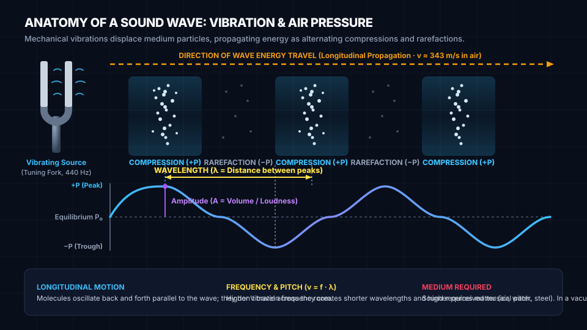

Foundational STEAM lesson for Sound & Vibration.
Sound is a mechanical longitudinal wave created by physical vibrations. As an acoustic source vibrates, it pushes nearby air molecules into tight clusters (compressions) and pulls back creating spread-out spaces (rarefactions), transmitting energy through the medium.
